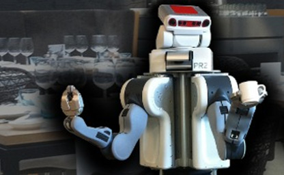

Coursework and Grading Policies
Throughout the course, students will work partly individual and partly in groups of two on a related research project
that they present at the end of the course. The grading policy for this course is based on an essay assignment, practical works and a final project. Students will need to score at least
a 5.5 average, and will have to get at least a 5.0 on each component:
1- Essay assignment (15%):
An essay assignment (i.e., two pages IEEE conference format) has been
designed to ensure all students will read important papers on 3D object perception, affordance detection and manipulation.
All students will get a chance to present their essay throughout the class during the reading days.
Each group will presents the content of a (set of) relevant paper(s).
The presenters need to send the essay of their reading assignments two dayes before the day of the class.
As an example, if you are going to present your work on Wednesday, you need to submit your essay by midnight on Monday.
The grading policy for this assignment is based on a Rubric chart containing the following criteria (available on Nestor):
- Content/Delivery/Creativity/Organization/Ability to answer questions/Length of presentation/Overall quality
Possible topics for the essay assignment include but not limited to the following papers.
It should be noted that you can use
connected paper website
to find related papers to the specific one.
| Topics |
Suggested Papers |
| Object Perception |
- Selecting CNN Features for Online Learning of 3D Objects
- Multi-View Convolutional Neural Networks
- Unseen Object Instance Segmentation for Robotic Environments
- Learning to See before Learning to Act: Visual Pre-training for Manipulation
- Simultaneous Multi-View Object Grasping and Recognition in Open-Ended Domains
- Improving Unimodal Object Recognition with Multimodal Contrastive Learning
- Learning 3D Dynamic Scene Representations for Robot Manipulation
- Big Transfer (BiT): General Visual Representation Learning
- Few-shot Image Classification: Just Use a Library of Pre-trained Feature Extractors and a Simple Classifier
|
| Continual Deep Learning |
- A survey on Deep Learning Advances on Different 3D Data Representations
- Replay in Deep Learning: Current Approaches and Missing Biological Elements
- Continual Lifelong Learning with Neural Networks:A Review
- A continual learning survey: Defying forgetting in classification tasks
- Lifelong Learning with Dynamically Expandable Networks
- 3D_DEN: Open-ended 3D Object Recognition using Dynamically Expandable Networks
- OrthographicNet: A deep learning approach for 3D object recognition in open-ended domains
|
| Human Robot Interaction |
- Reactive Human-to-Robot Handovers of Arbitrary Objects
- Objects Affordance Recognition for Natural Language Human-Robot Interaction
- Few-Shot Visual Grounding for Natural Human-Robot Interaction
- OpenPose: Realtime Multi-Person 2D Pose Estimation using Part Affinity Fields
- SHPR-Net: Deep Semantic Hand Pose Regression From Point Clouds
- Object affordance based multimodal fusion for natural Human-Robotinteraction
- Semantic Scene Manipulation Based on 3D Spatial Object Relations and Language Instructions
- Learning One-Shot Imitation from Humans without Humans
- Human-to-Robot Imitation in the Wild
|
| Object Affordance Detection |
- Learning to Grasp 3D Objects using Deep Residual U-Nets
- Affordance detection of tool parts from geometric features
- Robotics Dexterous Grasping: The Methods Based on Point Cloud and Deep Learning (review)
- AffordanceNet: An End-to-End Deep Learning Approach for Object Affordance Detection
- Object affordance detection with relationship-aware network
- Affordance Detection of Tool Parts from Geometric Features
- One-Shot Object Affordance Detection in the Wild
- Robotic pick-and-place of novel objects in clutter with multiaffordance grasping and cross-domain image matching
|
| Shape Completion for Grasping |
- Shape Completion Enabled Robotic Grasping*
- Beyond Top-Grasps Through Scene Completion
- Multi-Modal Geometric Learning for Grasping and Manipulation
- RGB-D Local Implicit Function for Depth Completion of Transparent Objects
- 3D Shape Estimation of Transparent Objects for Manipulation
- Task-driven Perception and Manipulation for Constrained Placement with No Shape Prior
- Learning 3D Shape Completion Under Weak Supervision
- Diverse Plausible Shape Completions from Ambiguous Depth Images
|
| Object Grasping and Maniulation |
- MVGrasp: Real-Time Multi-View 3D Object Grasping in Highly Cluttered Environments
- Closing the Loop for Robotic Grasping: A Real-time, Generative Grasp Synthesis Approach
- Volumetric Grasping Network: Real-time 6 DOF Grasp Detection in Clutter
- High precision grasp pose detection in dense clutter
- 6-DOF Grasping for Target-driven Object Manipulation in Clutter
- Deep Learning to Plan Robust Grasps with Synthetic Point Clouds and Analytic Grasp Metrics
- PointNet++ Grasping: Learning An End-to-end Spatial Grasp Generation Algorithm from Sparse Point Clouds
- Challenges and Outlook in Robotic Manipulation of Deformable Objects
- Self-Imitation Learning by Planning
- Fast geometry-based computation of grasping points on three-dimensional point clouds
- SafePicking: Learning Safe Object Extraction via Object-Level Mapping
-
|
| Kinestectich Teaching / Learning from Demonstrations |
- Learning to Grasp Familiar Objects using Object View Recognition and Template Matching
- Learning of grasp selection based on shape-templates
- Learning robots to grasp by demonstration
- Virtual Kinesthetic Teaching for Bimanual Telemanipulation
- Learning Dexterous Grasping with Object-Centric Visual Affordances
- Robot Grasping in Clutter:Using a Hierarchy of Supervisors for Learning from Demonstrations
- Grasping in the Wild: Learning 6DoF Closed-Loop Grasping From Low-Cost Demonstrations
- Learning Interactively to Resolve Ambiguity in Reference Frame Selection
- Recent Advances in Robot Learning from Demonstration
- A Learning-from-Observation Framework: One-Shot Robot Teaching for Grasp-Manipulation-Release Household Operations
|
| Task-Informed/Oriented Grasping |
- Learning task-oriented grasping for tool manipulation from simulated self-supervision
- KETO: Learning Keypoint Representations for Tool Manipulation Tool Manipulation
- OmniHang: Learning to Hang Arbitrary Objects
- Learning Task-Oriented Grasping From Human Activity Datasets
- Same Object, Different Grasps: Data and Semantic Knowledge for Task-Oriented Grasping
- Category-based task specific grasping
- Part-based Grasp Planning for Familiar Objects
- Same Object, Different Grasps: Data and Semantic Knowledge for Task-Oriented Grasping
|
| Dual-Arm Collaborative Manipulation |
- Autonomous Dual-Arm Manipulation of Familiar Objects
- Autonomous Bimanual Functional Regrasping of Novel Object Class Instances
- Grasping Bulky Objects with Two Anthropomorphic Hands
- Learning a Decentralized Multi-arm Motion Planner
- Learning and Generalisation of Primitives Skills Towards Robust Dual-arm Manipulation
- Deep Visual Reasoning: Learning to Predict Action Sequences for Task and Motion Planning from Images
- Learning Geometric Reasoning and Control for Long-Horizon Tasks from Visual Input
- A Novel Pipeline for Bi-manual Handover Task
- Vision-Based Robotic Pushing and Grasping for Stone Sample Collection under Computing Resource Constraints
- Dual arm manipulation - A survey
- Interactive, Collaborative Robots: Challenges and Opportunities
- Fully Autonomous Picking with a Dual-ArmPlatform for Intralogistics
|
| Pile Segmentation and Manipulation |
- Perceiving, Learning, and Exploiting Object Affordances for Autonomous Pile Manipulation
- Interactive singulation of objects from a pile
- Learning to Singulate Objects using a Push Proposal Network
- Model-Based Grasping of Unknown Objects from a Random Pile
- Learning Synergies between Pushing and Grasping with Self-supervised Deep Reinforcement Learning
- Robotic Pick-and-Place of Novel Objects in Clutter with Multi-Affordance Grasping and Cross-Domain Image Matching
- A Learning-based Robotic Bin-picking with Flexibly Customizable Grasping Conditions
- Probabilistic segmentation and targeted exploration of objects in cluttered environments
|
| Sim2Real Transfer |
- Closing the Simulation-to-Reality Gap for Deep Robotic Learning
- Sim-to-Real via Sim-to-Sim: Data-efficient Robotic Grasping via Randomized-to-Canonical Adaptation Networks
- Sim2Real Predictivity: Does Evaluation in Simulation Predict Real-World Performance?
- Sim2Real Viewpoint Invariant Visual Servoing by Recurrent Control
- Using Synthetic Data and Deep Networks to Recognize Primitive Shapes for Object Grasping
- Transferring Grasp Configurations using Active Learning and Local Replanning
|
| 6D pose estimation |
- Recovering 6D Object Pose and Predicting Next-Best-View in the Crowd
- Robust 6D Object Pose Estimation in Cluttered Scenes using Semantic Segmentation and Pose Regression Networks
- Recovering 6D Object Pose: A Review and Multi-modal Analysis
- DONet: Learning Category-Level 6D Object Pose and Size Estimation from Depth Observation
- Multi-view Self-supervised Deep Learning for 6D Pose Estimation in the Amazon Picking Challenge
- Multi-view 6D object pose estimation and camera motion planning using RGBD images
- Multi-view Self-supervised Deep Learning for 6D Pose Estimationin the Amazon Picking Challenge
|
| Visual Servoing |
- Survey on Visual Servoing for Manipulation
- Vision-driven Compliant Manipulation for Reliable, High-Precision Assembly Tasks
- End-to-End Training of Deep Visuomotor Policies
- Learning Hand-Eye Coordination for Robotic Grasping with Deep Learning and Large-Scale Data Collection
- Dynamic Grasping with Reachability and Motion Awareness
|
| Assistive Robotics |
- Robots for Humanity Using Assistive Robotics to Empower People with Disabilities
- Adaptive Robot-Assisted Feeding: An Online Learning Framework for Acquiring Previously-Unseen Food Items
- Is More Autonomy Always Better? Exploring Preferences of Users with Mobility Impairments in Robot-assisted Feeding
- Robot-Assisted Feeding: Generalizing Skewering Strategies across Food Items on a Plate
- Transfer depends on Acquisition: Analyzing Manipulation Strategies for Robotic Feeding
- Towards Robotic Feeding: Role of Haptics in Fork-based Food Manipulation
- Sensing Shear Forces During Food Manipulation: Resolving the Trade-Off Between Range and Sensitivity
|
| ... |
... |
2- Practical assignments and report (35%):
Two practical assignments have been devised to provide hands-on experiences for fundamental theories.
During the practical sessions, we will use the RACE framework, Gazebo, Rviz, MoveIt, and standard datasets to get more insight into different algorithms. Particularly,
students will work on a “clear_table” scenario using the RACE framework, which composes of two projects:
- Project1: Open-Ended Learning Approaches for 3D Object Recognition.
- Project2: Coupling between Object Perception and Manipulation: Learning to Grasp Objects in Highly Cluttered Environments
For both projects, students are provided with stub of the code and are expected to complete it (see the details below).
During the first and second assignments, students have to think about their final project, in particular, what they want to develop and if possible which comparisons they want to make.
*Note: At the end of each practical assignment a report (i.e., up to four pages IEEE conference format),
including all the figures, tables, and references, has to be delivered. These practical assignments prepare students to do the final course project. Please read the detailed description of each project below.
*Extra credit: We will evaluate your object recognition system using an open-ended evaluation protocol.
We will add 0.5 point to the final score of the student who achieves the highest performance, 0.35 point
to the student who achieves the second place, and 0.20 point to the student who achieves third place. We will compute the performance
of your algorithm ourselves (code that does not run will be disqualified from the contest). This reward is designed to encourage you to experiment with different algorithms
and hyperparameter settings to obtain the best performance.
The grading policy for this assignment is based on a Rubric chart containing the following criteria (will be available on Nestor):
- Content/Delivery/Creativity and presentation/Organization/Neatness and attractiveness/Overall quality

Setup the RACE framework and its dependencies
Here you will discover how easy it is to get started with the RACE framework.
This tutorial is not meant to be a deep dive into the ROS functionalities or codes surrounding object perception and learning.
Here we just refer the students to the installation steps required for each project.
If you’re interested in studying the framework in depth, including both (1) discussion of theories and (2) hands-on implementations,
check out my Ph.D. thesis.
[Project1] Open-Ended Learning Approaches for 3D Object Recognition
Human beings learn to recognize object categories ceaselessly over time. This ability to refine and extend knowledge from the set of
accumulated experiences facilitates the adaptation to new environments. In this assignment, studnets will learn how to create a lifelong object recognition system
that can learn about 3D object categories in an open-ended fashion [see the example].
[Project2] Coupling between Object Perception and Manipulation
In this assignment, students will learn about the concept of visual grasping and manipulation.
In particular, we developed a simulation environment in the PyBullet, where a UR5e robot perceives the environment using an RGB-D camera (e.g., Kinect);
In this assignment, students should program the robot to be able to grasp and manipulate objects in different situations.
3- Final project and report (50%):
For the final project, students will work in groups of four on either a
specific research project (up to 25% materials can be borrowed from the previous assignments) or an in-depth literature survey (~20-30 relevant papers, organized by different features,
identifying gaps in the state of the art). Finally, each group will write a report with the structure of a scientific conference paper
(i.e., 6+n pages IEEE
conference format). The report material (including text, figures, tables, acknowledgment, etc.) must fit into 6 pages, while there is no page limit for the appendix/references (n pages) sections.
Reports exceeding the (6+n) page limit will not be evaluated. The last two sessions are dedicated to the final project presentations.
Each group has to send a short description of the project (up to 2 paragraphs) to Hamidreza Kasaei (cognitiverobotic@gmail.com) to get feedback about the proposed project. This document should state:
- Title of project, student names and student numbers,
- Explain the goal of the to-be-developed system,
- Explain how will you compare your approach with other state-of-the-art approaches if possible.
Detailed information about the content of the report and the deadline will be posted later. Here is a short list of possible projects.
You may want to check out my list of projects and publications (see https://www.ai.rug.nl/irl-lab/publications.html).
You should select a topic from the below list and develop/test your idea using the provided PyBullet framework,
or come up with another project idea on your own (the topic should be relevant to the content of the course).
If you prefer to work on a c++ based framework, please contact Hamidreza Kasaei (course coordinator).
| Active Object Recognition |
Shape Completion for Grasping |
Pile Segmentation and Manipulation |
| Affordance Detection |
6D pose estimation |
Active Segmentation of Cluttered Scenes |
| Grasping and Manipulation |
Dual-Arm Manipulation |
Task-Informed/Oriented Grasping |
| Human-Robot Interaction |
Deep Transfer Learning |
Eye-in-Hand and Eye-to-Hand System |
| Open-Ended learning |
RL for Manipulation |
Path Planning in Manipulation |
The grading policy for this assignment is based on a Rubric chart containing the following criteria (will be available on Nestor):
- Content/Delivery/Creativity and presentation/Organization/Neatness and attractiveness/Overall quality